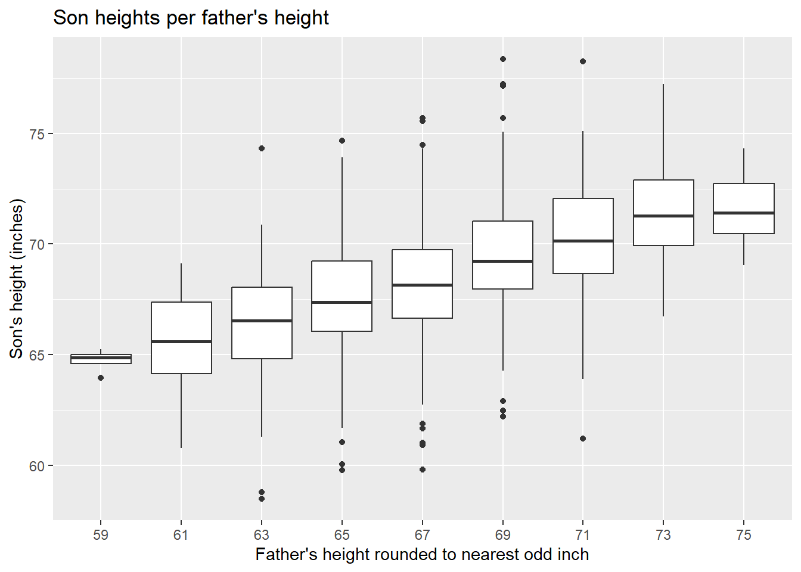
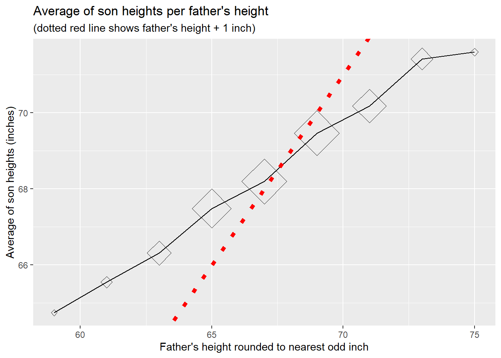
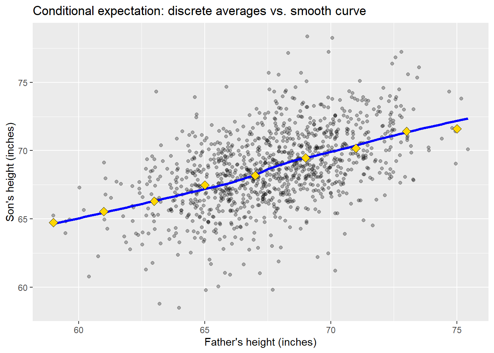
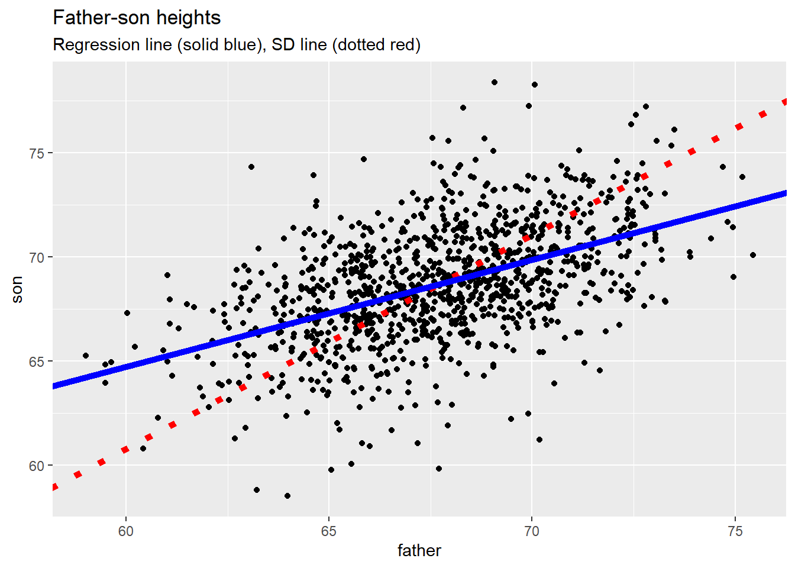
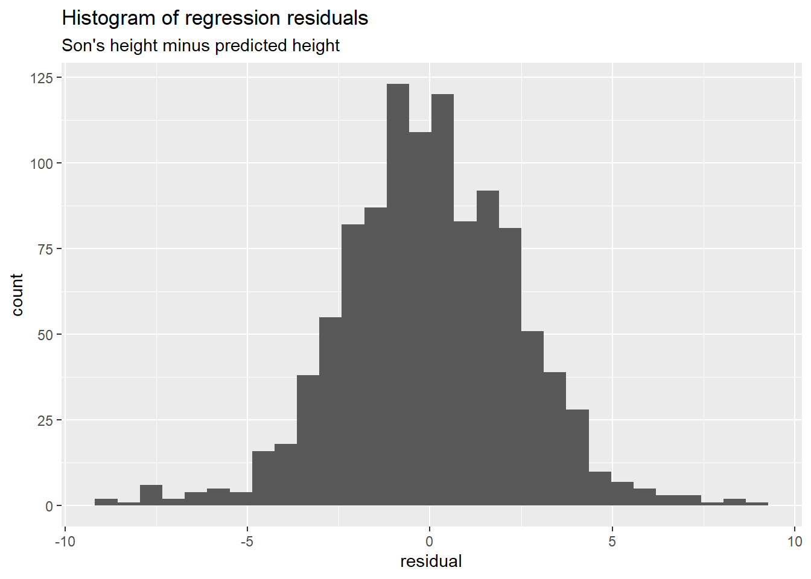
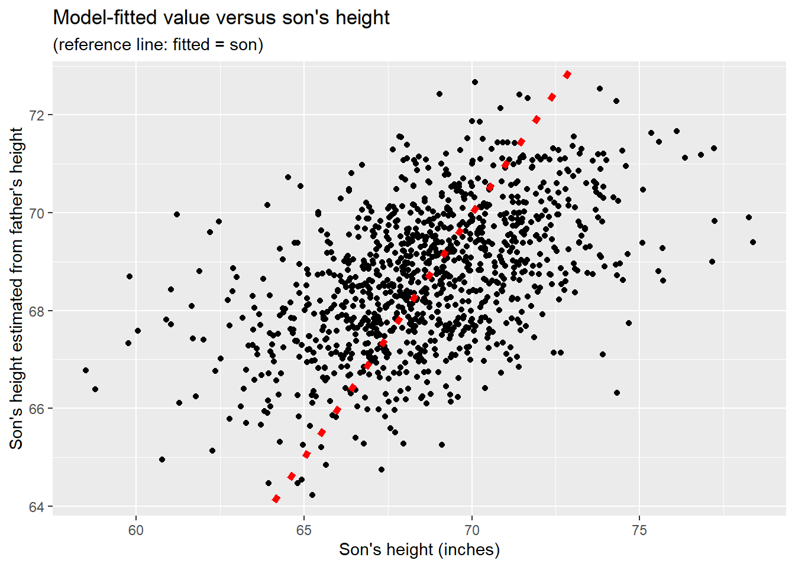
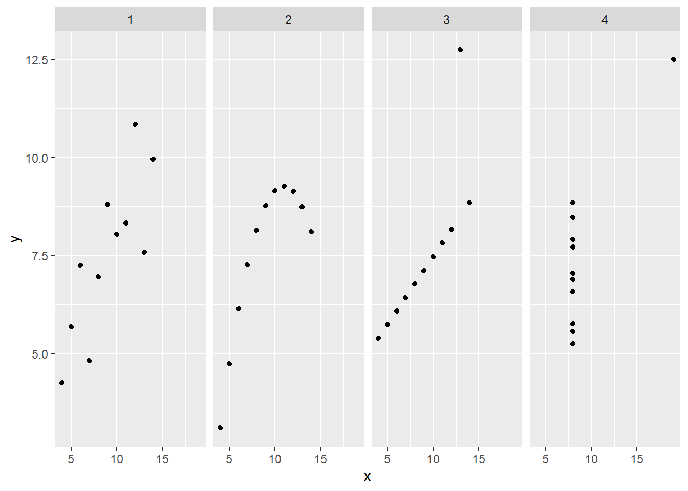

Show the code
library(here)
library(knitr)
library(tidyverse)
library(UsingR)library(here)
library(knitr)
library(tidyverse)
library(UsingR)# resolve conflicts with plotly
# conflicted::conflicts_prefer(plotly::layout)
# resolve conflicts with tidymodels packages
# tidymodels::tidymodels_prefer()library(eda4mldata)# stabilize simulated data
source(here("code", "eda4ml_set_seed.R"))
# previously used functions to load small data sets
# source(here("code", "handedness_data.R"))
# source(here("code", "rng_tbl.R"))A scatter plot of two variables invites a natural question: if we know the value of one variable, what can we say about the other? The answer lies in conditional distributions—the distribution of one variable given a particular value (or range of values) of another.
In Chapter 1 we examined the heights of fathers and sons, observing a positive association in the scatter plot. But the scatter plot shows the joint distribution of the two variables. To understand the relationship more precisely, we need to ask: for fathers of a given height, how are the sons’ heights distributed? This is the conditional distribution of son’s height given father’s height.
Conditional distributions are fundamental to both statistics and machine learning. In regression, we model the conditional mean—the expected value of the response variable given the predictors. In classification, we estimate conditional probabilities—the probability of each class given the features. Understanding conditional distributions builds the conceptual foundation for these methods.
This chapter develops the machinery for describing and measuring relationships between variables:
Conditional distributions and the graph of averages. We return to the father-son data and compute the average son’s height for each value of father’s height. This “graph of averages” reveals the conditional expectation function—the foundation of regression.
Z-scores and standardization. Converting variables to standard units (mean zero, standard deviation one) allows us to compare variables measured on different scales and simplifies the geometry of linear relationships.
The regression line. We derive the line that best predicts son’s height from father’s height, discovering along the way why Galton called this phenomenon “regression to the mean.”
Statistical independence. Two variables are independent when knowing one tells us nothing about the other—that is, when the conditional distribution equals the marginal distribution. We examine independence for both continuous and categorical variables, and encounter Simpson’s paradox as a cautionary tale about confounding.
Throughout, we emphasize the geometric interpretation: regression as orthogonal projection, correlation as the cosine of an angle between standardized variables. These perspectives, developed more fully in Part 2, connect exploratory analysis to the linear algebra underlying modern machine learning.
father_son_ht <- UsingR::father.son |>
tibble::as_tibble() |>
dplyr::rename(father = fheight, son = sheight)# vector of first and second central moments
fs_moments <- father_son_ht |>
dplyr::summarise(
f_avg = mean(father, na.rm = TRUE),
s_avg = mean(son, na.rm = TRUE),
f_sd = sd(father, na.rm = TRUE),
s_sd = sd(son, na.rm = TRUE),
r = cor(father, son)
) |>
as.vector() |> list_simplify()# construct additional variables
# f_ivl: successive 2-inch intervals of father heights
# f_mpt: mid-point of each interval
father_son_ht <- father_son_ht |>
dplyr::mutate(
f_ivl = cut(father, seq(58, 76, 2)),
f_mpt = (2 * ceiling(father/2)) - 1
)The box-plot below can be regarded as the (sample) conditional distribution of sons’ heights grouped by the height (rounded to the nearest odd inch) of each son’s father.
g_f_mpt <- father_son_ht |>
dplyr::filter(! is.na(f_mpt)) |>
ggplot2::ggplot(mapping = ggplot2::aes(
x = f_mpt |> forcats::as_factor(),
y = son
)) +
ggplot2::geom_boxplot() +
ggplot2::labs(
title = "Son heights per father's height",
x = "Father's height rounded to nearest odd inch",
y = "Son's height (inches)"
)
g_f_mpt
# son statistics per f_ivl
s_stats_per_f_mpt <- father_son_ht |>
dplyr::group_by(f_ivl, f_mpt) |>
dplyr::summarise(
s_count = dplyr::n(),
s_min = min(son, na.rm = TRUE),
s_mid = median(son, na.rm = TRUE),
s_max = max(son, na.rm = TRUE),
s_avg = mean(son, na.rm = TRUE)
) |>
dplyr::ungroup()
s_stats_per_f_mpt |>
knitr::kable(digits = 1)| f_ivl | f_mpt | s_count | s_min | s_mid | s_max | s_avg |
|---|---|---|---|---|---|---|
| (58,60] | 59 | 4 | 63.9 | 64.9 | 65.2 | 64.7 |
| (60,62] | 61 | 16 | 60.8 | 65.6 | 69.1 | 65.5 |
| (62,64] | 63 | 77 | 58.5 | 66.5 | 74.3 | 66.3 |
| (64,66] | 65 | 208 | 59.8 | 67.4 | 74.7 | 67.5 |
| (66,68] | 67 | 276 | 59.8 | 68.2 | 75.7 | 68.2 |
| (68,70] | 69 | 275 | 62.2 | 69.2 | 78.4 | 69.5 |
| (70,72] | 71 | 152 | 61.2 | 70.1 | 78.2 | 70.2 |
| (72,74] | 73 | 63 | 66.7 | 71.3 | 77.2 | 71.4 |
| (74,76] | 75 | 7 | 69.0 | 71.4 | 74.3 | 71.6 |
The last column in the table above is the sample average of the son’s height given the father’s height, which we take as an estimate of the population average of the son’s height given the father’s height, that is, the conditional expectation of son’s height given father’s height.
The figure below represents these sample conditional averages per father’s height as diamonds, whose area is roughly proportional to the number of sons in each group. The figure includes a reference line showing the father’s (midpoint) height plus 1 inch, corresponding to our previous calculation of an average son-minus father difference.
g_s_avg_per_f_mpt <- s_stats_per_f_mpt |>
ggplot2::ggplot(mapping = ggplot2::aes(
x = f_mpt,
y = s_avg
)) +
ggplot2::geom_line() +
ggplot2::geom_count(
shape = 23,
size = s_stats_per_f_mpt$s_count |> sqrt()) +
ggplot2::geom_abline(
intercept = 1,
slope = 1,
linetype = "dotted",
linewidth = 2,
color = "red") +
ggplot2::labs(
title = "Average of son heights per father's height",
subtitle = "(dotted red line shows father's height + 1 inch)",
x = "Father's height rounded to nearest odd inch",
y = "Average of son heights (inches)"
)
g_s_avg_per_f_mpt
The above graph of average son-height per father’s height forms an approximate straight line, although the slope of the line is less than 1 (which is the slope of the reference line).
The graph of averages approximates the conditional expectation function—the expected son’s height given father’s height—but the averaging bins introduce discontinuities. A smoother estimate can be obtained using local regression, often called loess (locally estimated scatterplot smoothing).
father_son_ht |>
ggplot2::ggplot(mapping = ggplot2::aes(x = father, y = son)) +
ggplot2::geom_point(alpha = 0.3) +
ggplot2::geom_smooth(
method = "loess",
se = FALSE,
color = "blue",
linewidth = 1.2) +
ggplot2::geom_point(
data = s_stats_per_f_mpt,
mapping = ggplot2::aes(x = f_mpt, y = s_avg),
shape = 23,
fill = "gold",
size = 3) +
ggplot2::labs(
title = "Conditional expectation: discrete averages vs. smooth curve",
x = "Father's height (inches)",
y = "Son's height (inches)"
)
The loess curve (blue) passes near the conditional averages (gold diamonds), confirming that both methods estimate the same underlying relationship. Loess works by fitting weighted local regressions in a sliding window, giving more weight to nearby points. Unlike the regression line we will derive shortly, loess makes no assumption of linearity—it is a nonparametric smoother.
The near-linearity of the loess curve here suggests that a linear model will be appropriate for these data. When loess reveals curvature, it signals that a simple linear regression may miss important structure.
Imagine choosing a father-son pair at random from the entire population and measuring their respective heights. This would be an example of a pair of random variables \((X, Y)\). If we happened to know the average and standard deviation of (father, son) heights, respectively, from the entire population, we could convert the given heights to so-called standard units, or z-scores, as follows.
\[ \begin{align} Z_x(X) = \frac{X - \mu_x}{\sigma_x} \\ Z_y(Y) = \frac{Y - \mu_y}{\sigma_y} \\ \end{align} \qquad(2.1)\]
Here \(\mu\) signifies the average (arithmetic mean) height across the entire population, and \(\sigma\) denotes the population standard deviation. Thus \(Z_x(X)\) gives the number of standard deviations above or below the population average (expected value).
Of course we seldom have precise values for these population parameters. In practice we then use sample estimates of the parameters, say \(\hat{\mu}\) for the sample average and \(\hat{\sigma}\) for the sample standard deviation.
\[ \begin{align} \hat{\mu}_x &= \frac{1}{n} \sum_{k = 1}^{n} x_k \\ \hat{\sigma}_{x}^2 &= \frac{1}{n-1} \sum_{k = 1}^{n} (x_k - \hat{\mu}_x)^2 \\ \end{align} \qquad(2.2)\]
So the term “z-score” or “standard unit” is usually understood with respect to the sample distribution.
\[ \begin{align} \hat{Z}_x(x_k) = \frac{x_k - \hat{\mu}_x}{\hat{\sigma}_x} \\ \hat{Z}_y(y_k) = \frac{y_k - \hat{\mu}_y}{\hat{\sigma}_y} \\ \end{align} \qquad(2.3)\]
The line given by the equation \(\hat{Z}_y(y) = \hat{Z}_x(x)\) is called the “SD line”. Here’s an equivalent equation of this line.
\[ \begin{align} \text{SD line: } \\ y & = \mathcal{l}_{SD}(x) \\ &= \hat{\mu}_y + \frac{\hat{\sigma}_y}{\hat{\sigma}_x} (x - \hat{\mu}_x) \\ \end{align} \qquad(2.4)\]
Of all lines \(y = \mathcal{l}(x)\) we might draw through the \((x_k,y_k)\) data points, the SD line \(y = \mathcal{l}_{SD}(x)\) minimizes the sum of squared distances from each \((x_k,y_k)\) data point to its orthogonal projection to the line.
Consider the father’s height as the predictor variable \((x)\) and the son’s height as the response variable \((y)\). We now seek a line that minimizes a different metric, namely the distance between the son’s height and its linear prediction based on the father’s height. In statistical parlance we are regressing the son’s height on the father’s height. (Because we have just one predictor variable this is called simple linear regression.) The minimizing line is called the regression line, and has the following equation.
\[ \begin{align} \text{Regression line: } \\ y & = \mathcal{l}_{R}(x) \\ &= \hat{\mu}_y + \hat{r} \frac{\hat{\sigma}_y}{\hat{\sigma}_x} (x - \hat{\mu}_x) \\ \end{align} \qquad(2.5)\]
An equivalent equation is \(\hat{Z}_y(y) = \hat{r} \hat{Z}_x(x)\), where \(\hat{r}\) denotes the sample correlation coefficient.
\[ \hat{r} = \frac{1}{n-1} \sum_{k = 1}^{n} \hat{Z}_x(x_k) \hat{Z}_y(y_k) \qquad(2.6)\]
Note that \(\hat{r}\) is restricted to the closed interval \([-1, 1]\).
The figure below shows the SD line and the Regression line for the father-son data.
g_fs_points <- father_son_ht |>
ggplot2::ggplot(mapping = ggplot2::aes(x = father, y = son)) +
ggplot2::geom_point()SD_slope = fs_moments[["s_sd"]] / fs_moments[["f_sd"]]
R_slope = fs_moments[["r"]] * SD_slope
g_fs_lines <- g_fs_points +
# SD line
ggplot2::geom_abline(
slope = SD_slope,
intercept =
fs_moments[["s_avg"]] - SD_slope * fs_moments[["f_avg"]],
linetype = "dotted",
linewidth = 2,
color = "red"
) +
# Regression line
ggplot2::geom_abline(
slope = R_slope,
intercept =
fs_moments[["s_avg"]] - R_slope * fs_moments[["f_avg"]],
linetype = "solid",
linewidth = 2,
color = "blue"
) +
ggplot2::labs(
title = "Father-son heights",
subtitle = "Regression line (solid blue), SD line (dotted red)"
)
g_fs_lines
The two lines intersect at the “point of averages”, that is, at \((\hat{\mu}_x, \hat{\mu}_y)\), which need not coincide with any data point.
The regression line has a smaller slope than the SD line. This geometric fact has a profound statistical interpretation: regression to the mean.
Galton observed that the sons of unusually tall fathers tend to be tall, but not quite as tall as the SD line would predict. Similarly, sons of unusually short fathers tend to be short, but not quite as short. In both cases, the sons’ heights “regress” toward the population mean. This is why Galton called the line the “regression” line.
Why does this happen? Consider a model in which a person’s observed height equals some underlying “true” height plus random variation—measurement error, environmental factors during growth, or simply chance. Under this model, the tallest group of fathers likely includes individuals whose random component was positive (which partly explains why they ended up in the tallest group). Their sons do not inherit this random component; each son receives a fresh, independent draw. Consequently, the sons of the tallest fathers tend to have heights closer to the mean than their fathers did.
The same logic applies in reverse: the shortest fathers likely include individuals whose random component was negative. Their sons, drawing fresh random variation, tend to be somewhat taller than their fathers—again moving toward the mean.
Regression to the mean is not a genetic tendency for tall parents to produce shorter offspring. It is a statistical phenomenon that arises whenever two variables are correlated but not perfectly so (\(|r| < 1\)). It appears in contexts far removed from genetics: students who score highest on a first exam tend to score somewhat lower on a second; athletes with exceptional seasons tend to have less exceptional follow-up years. Whenever we select a group based on an extreme value of one variable, we should expect their values on a correlated variable to be less extreme.
The following figure and table summarize the regression “residuals”, that is the son’s height \((y)\) minus the height \((\hat{y})\) predicted by the linear model.
# call functon stats::lm() to fit a linear model
lm_fs <- stats::lm(
data = father_son_ht,
formula = son ~ father
)
lm_fs
Call:
stats::lm(formula = son ~ father, data = father_son_ht)
Coefficients:
(Intercept) father
33.8866 0.5141 # join fitted values and regression residuals to original data
fs_residuals <- father_son_ht |>
dplyr::mutate(
fitted_value = lm_fs$fitted.values,
residual = lm_fs$residuals
)# histogram of residuals
g_fs_residuals <- fs_residuals |>
ggplot2::ggplot(mapping = ggplot2::aes(x = residual)) +
ggplot2::geom_histogram() +
ggplot2::labs(
title = "Histogram of regression residuals",
subtitle = "Son's height minus predicted height"
)
g_fs_residuals
# summarize distribution of residuals
fs_residuals$residual |>
summary() |>
as.matrix() |>
t() |>
knitr::kable(digits = 1)| Min. | 1st Qu. | Median | Mean | 3rd Qu. | Max. |
|---|---|---|---|---|---|
| -8.9 | -1.5 | 0 | 0 | 1.6 | 9 |
There are many ways to examine how well a model represents the data. Here’s a scatter diagram of the value predicted (fitted) by the model versus the son’s actual height.
# scatter diagram with (x, y) = (son, fitted)
g_resid_son <- fs_residuals |>
ggplot2::ggplot(mapping = ggplot2::aes(
x = son, y = fitted_value
)) +
ggplot2::geom_point() +
ggplot2::geom_abline(
intercept = 0,
slope = 1,
linetype = "dotted",
linewidth = 2,
colour = "red"
) +
ggplot2::labs(
title = "Model-fitted value versus son's height",
subtitle = "(reference line: fitted = son)",
x = "Son's height (inches)",
y = "Son's height estimated from father's height"
)
g_resid_son
We see that the sons who are extremely short or extremely tall are not represented well by the model, which is heavily influenced by mid-range father-son heights containing most of the data. The father’s height alone is a helpful but imperfect predictor of the son’s height.
The father-son data set is well approximated by a bivariate normal distribution. The parameter estimates are as follows.
fs_moments |>
as.matrix() |>
t() |>
knitr::kable(
digits = 1,
col.names = c("Father avg", "Son avg", "Father SD", "Son SD", "r")
)| Father avg | Son avg | Father SD | Son SD | r |
|---|---|---|---|---|
| 67.7 | 68.7 | 2.7 | 2.8 | 0.5 |
Sons are on average about an inch taller than fathers. Fathers and sons share similar standard deviations (2.7 versus 2.8). The sample correlation coefficient is about 0.5.
Among the mathematical properties of normal distributions is the fact that if the pair of random variables \((X, Y)\) has a bivariate normal distribution, then the conditional expectation \(E(Y | X)\) is indeed the linear regression function \(\mathcal{l}_R(X)\) whose equation is that of the population regression line, \(Z_y(Y) = r \; Z_x(X)\). The conditional distribution \(\mathcal{D}(Y | X)\) of \(Y\) given \(X\) is normal with a mean of \(\mathcal{l}_R(X)\) and a standard deviation of \(\sqrt{1 - r^2} \; \sigma_y\). Conditioning on \(X\) thus shrinks the standard deviation of \(Y\) by a factor of \(\sqrt{1 - r^2}\). For the father-son data, with \(r\) approximately equal to 0.5, this shrinkage factor is approximately 0.87, amounting to a 13% reduction in the standard deviation of \(Y\).
The sample average (arithmetic mean) is notoriously sensitive to outliers (data points far removed from most of the other data points). For this reason, the median is often used in place of the mean to describe central or typical values. For example, medians are commonly used to typify home prices in a neighborhood, and for other financial data.
Similarly, the interquartile range (IQR, the third minus the first quartile of the data) may be preferred to the standard deviation to measure how widely data points are spread around a central value (e.g., median).
In the present context this means that both the SD line and the Regression line are highly sensitive to outlying data points.
Professor Frank Anscombe constructed the “Anscombe Quartet”: 4 data sets, each consisting of 11 observations of \((x, y)\) pairs of numeric values. Here are the statistics per group.
anscombe_tbl <- datasets::anscombe |>
tibble::as_tibble()
# construct 4 groups of x-values
x_tbl <- anscombe_tbl |>
# original row index
dplyr::mutate(idx = 1:nrow(anscombe)) |>
dplyr::select(idx, x1:x4) |>
tidyr::pivot_longer(
cols = x1:x4,
names_to = "grp",
names_prefix = "x",
values_to = "x"
) |>
dplyr::mutate(grp = as.integer(grp))
# construct 4 groups of y-values
y_tbl <- anscombe_tbl |>
# original row index
dplyr::mutate(idx = 1:nrow(anscombe)) |>
dplyr::select(idx, y1:y4) |>
tidyr::pivot_longer(
cols = y1:y4,
names_to = "grp",
names_prefix = "y",
values_to = "y"
) |>
dplyr::mutate(grp = as.integer(grp))
# join x and y values
xy_long <- x_tbl |> dplyr::left_join(
y = y_tbl,
by = c("idx", "grp")
) |>
dplyr::select(grp, idx, x, y) |>
dplyr::arrange(grp, idx)xy_stats <- xy_long |>
dplyr::summarise(
.by = grp,
x_avg = mean(x, na.rm = TRUE),
y_avg = mean(y, na.rm = TRUE),
x_sd = sd(x, na.rm = TRUE),
y_sd = sd(y, na.rm = TRUE),
r = cor(x, y)
)
xy_stats |>
knitr::kable(digits = 2)| grp | x_avg | y_avg | x_sd | y_sd | r |
|---|---|---|---|---|---|
| 1 | 9 | 7.5 | 3.32 | 2.03 | 0.82 |
| 2 | 9 | 7.5 | 3.32 | 2.03 | 0.82 |
| 3 | 9 | 7.5 | 3.32 | 2.03 | 0.82 |
| 4 | 9 | 7.5 | 3.32 | 2.03 | 0.82 |
The four groups share virtually identical averages, standard deviations, and \((x, y)\) correlation coefficients. Consequently the four data sets generate identical regression lines. Yet, as shown below, the pattern of \((x, y)\) values differs markedly among these data sets.
g_xy <- xy_long |>
ggplot2::ggplot(mapping = ggplot2::aes(
x = x, y = y, group = grp
)) +
ggplot2::geom_point() +
ggplot2::facet_grid(cols = ggplot2::vars(grp))
g_xy
Summary statistics can mask dramatically different data structures. Group 2 traces a parabola; group 3 has ten points on a line plus one outlier; group 4 has ten observations at a single \(x\)-value. Yet all four groups yield identical means, standard deviations, correlations, and regression lines. Always visualize before summarizing.
The father-son data is an example of a pair of statistically dependent variables, since the distribution of sons’ heights changes when conditioned on the father’s height. (The same can be said for fathers’ heights conditioned on the height of the son.) Short fathers tend to have short sons; tall fathers tend to have tall sons.
Practical examples of statistically independent (unrelated) variables exist but are rare, since studies typically collect data on variables believed to be related. Nevertheless, the concept of statistical independence is very useful, as it gives rise to measures of departure from statistical independence (and thus measures of statistical association).
The correlation coefficient \(r\) is an example of such a measure for two continuous variables. If \((X, Y)\) is a pair of statistically independent variables, then \(r = 0\). Note, however, that \((X, Y)\) may be statistically dependent even if uncorrelated, that is, even if \(r = 0\).
The pair of random variables \((X, Y)\) is defined to be statistically independent if
\[ \begin{align} P(X \in A, \; Y \in B) &= P(X \in A) \times P(Y \in B) \\ \\ & \text{for all possible sets } A, B \\ \end{align} \qquad(2.7)\]
If \(P(X \in A) > 0\) then statistical independence implies:
\[ \begin{align} P(Y \in B \; | \; X \in A) &= \frac{P(X \in A, \; Y \in B)}{P(X \in A)} \\ &= P(Y \in B) \\ \\ & \text{whenever } P(X \in A) > 0 \end{align} \qquad(2.8)\]
That is, the conditional probability of random variable \(Y\) belonging to set \(B\) given that \(X\) belongs to set \(A\) is equal to the unconditional probability that \(Y\) belongs to set \(B\). It follows that the conditional expectation \(E(Y | X)\) does not depend on \(X\), and thus equals the constant \(E(Y)\), the unconditional expected value of \(Y\).
As previously noted, for a pair \((X,Y)\) of continuous variables, the correlation coefficient is a measure (though not a definitive measure) of statistical association or dependence. In the case when \(X\) and \(Y\) are each restricted to a finite set of values, the chi-square statistic is often a useful measure of statistical association.
To illustrate, we use data on handedness (right, left, or ambidextrous) of US adults aged 25-34. The data were collected by the US Health and Nutrition Examination Survey (HANES), as cited in FPP. The question we investigate is whether handedness is independent of sex (male, female). For each of the six possible combinations of handedness and sex, the table below counts the number of people in the sample having that combination.
hs_tbl <- tibble::tribble(
~sex, ~hnd, ~count,
"male", "right", 934L,
"male", "left", 113L,
"male", "ambi", 20L,
"female", "right", 1070L,
"female", "left", 92L,
"female", "ambi", 8L
)hs_wide <- hs_tbl |>
tidyr::pivot_wider(
names_from = "sex",
values_from = "count"
)hs_wide |> knitr::kable(
caption = "Handedness counts among sampled males and females",
col.names = c("handedness", "male", "female")
)| handedness | male | female |
|---|---|---|
| right | 934 | 1070 |
| left | 113 | 92 |
| ambi | 20 | 8 |
The percentages of handedness among males and among females are as follows.
h_smy <- hs_tbl |>
dplyr::summarise(
.by = "hnd",
count = sum(count, na.rm = TRUE)
)
# # A tibble: 3 × 2
# hnd count
# <chr> <int>
# 1 right 2004
# 2 left 205
# 3 ambi 28s_smy <- hs_tbl |>
dplyr::summarise(
.by = "sex",
count = sum(count, na.rm = TRUE)
)
# # A tibble: 2 × 2
# sex count
# <chr> <int>
# 1 male 1067
# 2 female 1170m_total <- s_smy[[1, 2]]
f_total <- s_smy[[2, 2]]
hs_pct_wide <- hs_wide |>
dplyr::mutate(
male = 100 * male / m_total,
female = 100 * female / f_total
)hs_pct_wide |> knitr::kable(
caption = "Percentage handedness among males, and among females",
col.names = c("handedness", "male", "female"),
digits = 1
)| handedness | male | female |
|---|---|---|
| right | 87.5 | 91.5 |
| left | 10.6 | 7.9 |
| ambi | 1.9 | 0.7 |
If handedness and sex were independent, we should see similar percentages of males and females for each type of handedness. The above table indeed shows similar percentages, but are they close enough to conclude independence?
In the early 1900’s Karl Pearson developed the chi-squared test of independence of categorical variables. The reasoning is as follows. Suppose we accept as population estimates the data percentages of handedness (across males and females), and we also accept the somewhat different percentages of males and females in the sample. These so-called marginal distributions are not in dispute. What we’re investigating concerns the cell percentages, combinations of handedness and sex. Under the assumption of independence we would expect each cell percentage in the data to be close to the product of the handedness percentage and the male or female percentage. That product is an expected cell percentage (assuming independence). Multiplying the expected cell percentage by the by the sample size \(n\) (number of people in the sample) gives an expected cell count. Pearson’s test of independence is based on the following chi-squared statistic.
\[ \begin{align} \chi^2 &= \sum_{j = 1}^J {\sum_{k = 1}^K {\frac{(O_{j,k} - E_{j,k})^2}{E_{j,k}}}} \\ \\ O_{j,k} &= \text{observed count for cell } \{j, k\} \\ E_{j,k} &= \text{expected count for cell } \{j, k\} \\ \end{align} \qquad(2.9)\]
Under the assumption of independence Pearson determined the probability distribution of the \(\chi^2\) statistic mathematically based on the notion of “degrees of freedom”.
That is, for each row-index \(j\) the expected counts summed across \(k\) are constrained to match the corresponding sum of the observed values (the sum for row \(j\)). Similarly, for each column-index \(k\) the expected counts summed across \(j\) are constrained to match the corresponding sum of the observed values (the sum for column \(k\)). Given these fixed marginal sums, cell values can vary with \((J-1) \times (K-1)\) degrees of freedom.
Under the assumption of independence and for a large sample size \(n\), the chi-squared statistic approximately follows the distribution of the sum of squared independent standard normal variables, the number of independent normal variables matching the degrees of freedom.
hs_chi_sq <- hs_wide |>
dplyr::select(male, female) |>
as.matrix() |>
stats::chisq.test()
# data: as.matrix(dplyr::select(hs_wide, male, female))
# X-squared = 11.806, df = 2, p-value = 0.002731For the handedness data the degrees of freedom equals 2, and the value of the statistic is 11.8, which is beyond the 99% quantile of the corresponding chi-squared distribution (and thus yields a “p-value” of less than 1%). This would be regarded as strong evidence against the assumption of independence.
The chi-squared statistic is the sum of squared terms of the following form.
\[ \begin{align} \frac{O_{j,k} - E_{j,k}}{\sqrt{E_{j,k}}} \\ \end{align} \qquad(2.10)\]
These terms are called “Pearson residuals”. For the handedness data, the Pearson residuals are as follows.
# Pearson residuals
hs_resid_wide <- hs_wide |>
dplyr::select(hnd) |>
dplyr::mutate(
male = hs_chi_sq$residuals[, 1],
female = hs_chi_sq$residuals[, 2]
)hs_resid_wide |> knitr::kable(
caption = "Pearson residuals for handedness data",
col.names = c("handedness", "male", "female"),
digits = 1
)| handedness | male | female |
|---|---|---|
| right | -0.7 | 0.7 |
| left | 1.5 | -1.5 |
| ambi | 1.8 | -1.7 |
Roughly speaking, under independence the magnitude of cell values should align with the scale of standard normal variables. For the handedness data, the large value of the chi-square statistic cannot be attributed to a single cell of the table, but rather to the left-handed and ambidextrous cells (handedness to which males are more prone than females).
# reformat data
ucb_admissions <- datasets::UCBAdmissions |>
tibble::as_tibble() |>
dplyr::rename_with(tolower) |>
dplyr::rename(sex = gender) |>
dplyr::rename(count = n) |>
dplyr::select(dept, sex, admit, count)# count Male and Female applicants
ucb_sex_smy <- ucb_admissions |>
dplyr::summarise(
.by = c("sex"),
count = sum(count, na.rm = TRUE)
)
# ucb_sex_smy
# # A tibble: 2 × 2
# sex count
# <chr> <dbl>
# 1 Male 2691
# 2 Female 1835# count all applicants
ucb_total_applicants <-
ucb_sex_smy[[1, 2]] +
ucb_sex_smy[[2, 2]]# count admissions/rejections per sex
ucb_sa_smy <- ucb_admissions |>
dplyr::summarise(
.by = c("sex", "admit"),
count = sum(count, na.rm = TRUE)
)
# ucb_sa_smy
# # A tibble: 4 × 3
# sex admit count
# <chr> <chr> <dbl>
# 1 Male Admitted 1198
# 2 Male Rejected 1493
# 3 Female Admitted 557
# 4 Female Rejected 1278# count Males and Females in separate columns
ucb_sa_wide <- ucb_sa_smy |>
tidyr::pivot_wider(
names_from = "sex",
values_from = "count"
)
# ucb_sa_wide
# # A tibble: 2 × 3
# admit Male Female
# <chr> <dbl> <dbl>
# 1 Admitted 1198 557
# 2 Rejected 1493 1278# convert counts to percentages
ucb_sa_pct <- ucb_sa_wide |>
dplyr::mutate(
Male = 100 * Male / ucb_sex_smy[[1, 2]],
Female = 100 * Female / ucb_sex_smy[[2, 2]]
)
# ucb_sa_pct |> print(digits = 1)
# # A tibble: 2 × 3
# admit Male Female
# <chr> <dbl> <dbl>
# 1 Admitted 44.5 30.4
# 2 Rejected 55.5 69.6We now turn to a different set of categorical data from a study of graduate admissions at UC Berkeley in 1973 available in R as datasets::UCBAdmissions. The study was prompted by a concern of bias against females. The table below summarizes admission percentages for males and for females across the six largest departments.
ucb_sa_pct |>
dplyr::rename(decision = admit) |>
knitr::kable(
caption = "Admission percentages for males and for females",
digits = 1
)| decision | Male | Female |
|---|---|---|
| Admitted | 44.5 | 30.4 |
| Rejected | 55.5 | 69.6 |
These percentages look damning, but the table below, showing admission rates per department, tells a different story.
# applicants per department
ucb_dept_smy <- ucb_admissions |>
dplyr::summarise(
.by = c("dept"),
count = sum(count, na.rm = TRUE)
) |>
dplyr::mutate(
# percent of all applicants applying to each dept
pct = 100 * count / ucb_total_applicants
)
# ucb_dept_smy |> print(digits = 1)
# # A tibble: 6 × 3
# dept count pct
# <chr> <dbl> <dbl>
# 1 A 933 20.6
# 2 B 585 12.9
# 3 C 918 20.3
# 4 D 792 17.5
# 5 E 584 12.9
# 6 F 714 15.8# count addmissions/rejections per department
ucb_da_smy <- ucb_admissions |>
dplyr::summarise(
.by = c("dept", "admit"),
count = sum(count, na.rm = TRUE)
)# move (Admitted, Rejected) into separate columns
ucb_da_wide <- ucb_da_smy |>
tidyr::pivot_wider(
names_from = admit,
values_from = count
)
# ucb_da_wide
# # A tibble: 6 × 3
# dept Admitted Rejected
# <chr> <dbl> <dbl>
# 1 A 601 332
# 2 B 370 215
# 3 C 322 596
# 4 D 269 523
# 5 E 147 437
# 6 F 46 668# overall admission rate per department
ucb_da_pct <- ucb_da_wide |>
dplyr::mutate(
# percent admitted per department (Male + Female)
MF_pct = 100 * Admitted / ucb_dept_smy$count
)
# ucb_da_pct |> print(digits = 1)
# # A tibble: 6 × 4
# dept Admitted Rejected MF_pct
# <chr> <dbl> <dbl> <dbl>
# 1 A 601 332 64.4
# 2 B 370 215 63.2
# 3 C 322 596 35.1
# 4 D 269 523 34.0
# 5 E 147 437 25.2
# 6 F 46 668 6.44# filter on males
# count per-department applications and admissions
# count male applicants per department
ucb_m_d_smy <- ucb_admissions |>
dplyr::filter(sex == "Male") |>
dplyr::summarise(
.by = "dept",
count = sum(count, na.rm = TRUE)
)
# count male admissions/rejections per department
ucb_m_da_smy <- ucb_admissions |>
dplyr::filter(sex == "Male") |>
dplyr::summarise(
.by = c("dept", "admit"),
count = sum(count, na.rm = TRUE)
)
# move (Admitted, Rejected) counts into separate columns
ucb_m_da_wide <- ucb_m_da_smy |>
tidyr::pivot_wider(
names_from = "admit",
values_from = "count"
)
# convert counts to percents
ucb_m_da_pct <- ucb_m_da_wide |>
dplyr::mutate(
Admitted = 100 * Admitted / ucb_m_d_smy$count,
Rejected = 100 * Rejected / ucb_m_d_smy$count
)# filter on females
# count per-department applications and admissions
# count female applicants per department
ucb_f_d_smy <- ucb_admissions |>
dplyr::filter(sex == "Female") |>
dplyr::summarise(
.by = "dept",
count = sum(count, na.rm = TRUE)
)
# count female admissions/rejections per department
ucb_f_da_smy <- ucb_admissions |>
dplyr::filter(sex == "Female") |>
dplyr::summarise(
.by = c("dept", "admit"),
count = sum(count, na.rm = TRUE)
)
# move (Admitted, Rejected) counts into separate columns
ucb_f_da_wide <- ucb_f_da_smy |>
tidyr::pivot_wider(
names_from = "admit",
values_from = "count"
)
# convert counts to percents
ucb_f_da_pct <- ucb_f_da_wide |>
dplyr::mutate(
Admitted = 100 * Admitted / ucb_f_d_smy$count,
Rejected = 100 * Rejected / ucb_f_d_smy$count
)# admission rate of each department:
# among males, among females, and overall
ucb_das_pct <- ucb_da_pct |>
dplyr::select(dept, MF_pct) |>
dplyr::left_join(
y = ucb_m_da_pct |>
dplyr::select(dept, Admitted) |>
dplyr::rename(M_pct = Admitted),
by = "dept"
) |>
dplyr::left_join(
y = ucb_f_da_pct |>
dplyr::select(dept, Admitted) |>
dplyr::rename(F_pct = Admitted),
by = "dept"
) |>
dplyr::select(dept, M_pct, F_pct, MF_pct)ucb_das_pct |> knitr::kable(
caption = "Admission percentages per department",
col.names = c("dept", "among_males", "among_females", "overall"),
digits = 1
)| dept | among_males | among_females | overall |
|---|---|---|---|
| A | 62.1 | 82.4 | 64.4 |
| B | 63.0 | 68.0 | 63.2 |
| C | 36.9 | 34.1 | 35.1 |
| D | 33.1 | 34.9 | 34.0 |
| E | 27.7 | 23.9 | 25.2 |
| F | 5.9 | 7.0 | 6.4 |
The table shows that four of the six departments admitted a greater percentage of female applicants than male applicants. In the remaining two departments females did somewhat worse than males. Yet, summing over all six departments, women applicants fared decidedly worse than male applicants. How can this be?
The answer can be found by: (1) noting that the table above lists departments, labeled A through F, in descending order of overall admission rates; and (2) examining the following table that shows each department’s share of applicants: male, female, and overall.
# count number of applicantions per (dept, sex)
ucb_ds_smy <- ucb_admissions |>
dplyr::summarise(
.by = c("dept", "sex"),
count = sum(count, na.rm = TRUE)
)# list (Male, Female) as separate columns
ucb_ds_wide <- ucb_ds_smy |>
tidyr::pivot_wider(
names_from = "sex",
values_from = "count"
) |>
dplyr::mutate(
total = Male + Female
)ucb_ds_wide |> knitr::kable(
caption = "Number of applications per department",
col.names = c("dept", "from_males", "from_females", "overall")
)| dept | from_males | from_females | overall |
|---|---|---|---|
| A | 825 | 108 | 933 |
| B | 560 | 25 | 585 |
| C | 325 | 593 | 918 |
| D | 417 | 375 | 792 |
| E | 191 | 393 | 584 |
| F | 373 | 341 | 714 |
Here are the same counts but now converted into per-department percentage of applications from males, females, and overall, respectively.
# convert counts to percents
ucb_ds_pct <- ucb_ds_wide |>
dplyr::mutate(
Male = 100 * Male / ucb_sex_smy[[1, 2]],
Female = 100 * Female / ucb_sex_smy[[2, 2]],
total = 100 * total / ucb_total_applicants
)ucb_ds_pct |> knitr::kable(
caption = "Percent of applications per department",
col.names = c("dept", "from_males", "from_females", "overall"),
digits = 1
)| dept | from_males | from_females | overall |
|---|---|---|---|
| A | 30.7 | 5.9 | 20.6 |
| B | 20.8 | 1.4 | 12.9 |
| C | 12.1 | 32.3 | 20.3 |
| D | 15.5 | 20.4 | 17.5 |
| E | 7.1 | 21.4 | 12.9 |
| F | 13.9 | 18.6 | 15.8 |
We see that relatively few females applied to departments A and B, which had the highest overall admission rates. Females tended more than males to apply to departments having overall low rates of admission. That is, departmental admission rate is an explanatory variable missing from the initial summary of male and female admission rates across all six departments.
This phenomenon, a pattern per group that is masked when summarized across groups, is known as Simpson’s paradox. More generally, we must be alert to the possibility that we have overlooked some variable (sometimes called a “confounding” variable) that could alter our conclusions.
The preceding sections have introduced two measures of statistical association: the correlation coefficient \(r\) for continuous variables, and the chi-squared statistic \(\chi^2\) for categorical variables. Both measure departure from statistical independence, though in different ways.
An alternative framework for measuring association comes from information theory, which quantifies how much knowing one variable reduces uncertainty about another. This framework—including concepts such as entropy, mutual information, and KL divergence—is developed in Chapter 6. Information-theoretic measures have the advantage of capturing nonlinear relationships that correlation might miss, and they underpin many machine learning algorithms including decision trees and neural network training.
(Diamond Data) Load the diamond data provided by R package ggplot2 (diamonds <- ggplot2::diamonds). Of the 10 variables (data columns) choose one as the response variable \((y)\) and another as a predictor variable \((x)\). Construct a scatter diagram of \((x, y)\) data points. Calculate the equation of the regression line. Is the predictor variable useful, or irrelevant? The R package stats includes potentially helpful functions including stats::lm() and stats::loess().
(Bivariate Normal Simulation) Using stats::rnorm() or otherwise, generate independent instances of a standard normal variable \(X\) (that is, having mean zero and standard deviation 1). Next choose a value of \(r\) such that \(-1 < r < 1\). Now for each instance of \(X\) construct an instance of random variable \(Y\) so that the distribution \(\mathcal{D}(Y \; | \; X)\) of \(Y\) given \(X\) is normal with expected value \(r \times X\) and standard deviation \(\sqrt{1 - r^2}\). (Hint: consider constructing \(Y\) by using \(X\) along with a new, independent standard normal variable \(Z\).) What are the unconditional mean and standard deviation of \(Y\)? What is the correlation coefficient of the pair \((X, Y)\)? How might you generalize your construction to accommodate other prescribed means \((\mu_x, \mu_y)\) and standard deviations \((\sigma_x, \sigma_y)\) of \((X, Y)\)?
(Simpson’s Paradox) In the discussion above we illustrated Simpson’s paradox using the UCB Admissions data. Find or construct a different example.
(Correlation vs. Independence) Construct an example of a pair of random variables \((X, Y)\) that are statistically dependent but have correlation coefficient \(r = 0\). (Hint: consider a case where \(Y\) is a deterministic function of \(X\), but the relationship is nonlinear.)
R Graphics Cookbook (2e) by Winston Chang
Statistics (4e) by Freedman, Pisani, Purves | Goodreads
Independence (probability theory) - Wikipedia
Sex bias in graduate admissions: data from Berkeley, by Bickel, Hammel, and O’connell
Simpson’s paradox - Wikipedia